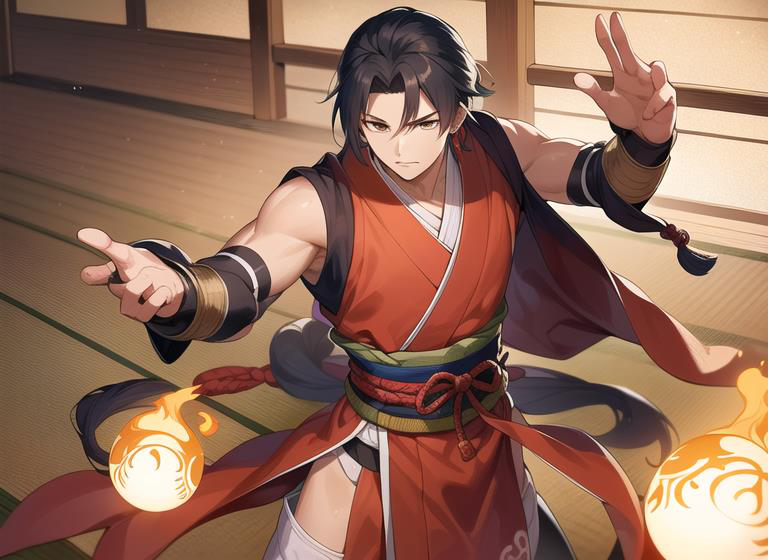

体
Físico
¿Alto y esbelto, musculoso, fibroso? ¿Cabeza rapada, cicatriz, máscara?
Antes de ponernos a gastar puntos en habilidades y demás, es muy recomendable saber qué tipo de personaje queremos jugar. En el mundo de Nakama un personaje suele simbolizar un concepto, ya sea característico del animal de su Kazoku, o de un concepto más genérico aplicado, como una actitud, un fenómeno natural, un objeto, etcétera. Teniendo esto en cuenta, responde las siguientes preguntas:
Describe a tu personaje físicamente: ¿Es alto y esbelto, bajo y gordo, musculoso, fibroso, lleva la cabeza rapada, una cicatriz le recorre el torso, cubre su cara con una máscara?
Describe su personalidad: ¿Es un tipo siniestro, introvertido, mujeriego, serio y responsable, enérgico, irascible, voluntarioso, desapasionado?
¿Cuál es tu Kazoku? ¿Cuáles de las cualidades de tu Kazoku se ven reflejadas en tu personaje y de qué manera?
Tu personaje es un experto en combate, ¿pero qué estilo prefiere? ¿Cuáles son sus armas favoritas? ¿Hay alguna de la que no se separe jamás? ¿Qué técnicas suele emplear con ellas?
¿Conoce tu personaje algún jutsu? ¿En qué consiste? ¿Se trata de una técnica defensiva, de ataque, entorpece a tus rivales de alguna forma, te ofrece alguna ventaja sobre ellos?
Una vez que tengas claro cómo va a ser tu personaje, es hora de definirlo a nivel de reglas.
¿Alto y esbelto, musculoso, fibroso? ¿Cabeza rapada, cicatriz, máscara?
¿Siniestro, introvertido, mujeriego, serio, enérgico, irascible?
¿Qué casa eres y qué cualidades reflejas?
¿Qué estilo prefieres? ¿Armas favoritas? ¿Hay una de la que jamás te separas?
¿Defensivo, de ataque, entorpece a rivales o te da ventaja?
Luego elige de qué escuela vienen tus habilidades —Shisen, Kage o Reikon— y cuenta: ¿mentor o aprendidas por las malas? ¿Qué problema te acarrearon?
Recién nombrado
Recomendado
Empieza adolescente y crece
Con experiencia
Veterano joven
Veterano
Forjado
1 PH = +1 · Mismo presupuesto que características. Las 3 escuelas están completas en las tarjetas de abajo.
Máximo 3 con 10, 4 con 20, 5 con 30… hasta 12 con 100. Tope: 30 jugadores / 50 PNJ (Kobura).
1 PC+1 PH por partida (2+2 si brillante). Al subir puedes redistribuir en características tantos puntos como tu límite.
El PDF p.26–39 lo contaba en párrafos corridos; aquí ese texto íntegro vive en las tablas y tarjetas siguientes — legible, sin duplicar.

| Característica | Base | Coste | Efecto |
|---|---|---|---|
| Iniciativa | +0 | 1 PC = +1 | Capacidad de reacción y reflejos: actuar antes en combate. |
| Ataque Melee | +0 | 1 PC = +1 | Precisión cuerpo a cuerpo. |
| Daño Melee | 1d6 | 1 PC = +1 (cada +3 = 1d6) | Daño en combate cuerpo a cuerpo. |
| Defensa Melee | 10 | 1 PC = +1 | Si el oponente iguala o supera la defensa, hay daño. |
| Ataque Distancia | +0 | 1 PC = +1 | Precisión a distancia. |
| Daño Distancia | 1d6 | 1 PC = +1 (cada +3 = 1d6) | Daño a distancia. |
| Defensa Distancia | 10 | 1 PC = +1 | Defensa frente a ataques a distancia. |
| Absorción | 0 | 1 PC = +1 | Reduce el daño recibido: armadura, piel dura o magia. |
| Puntos de Vida | 20 | 1 PC = +5 PV | A 0 PV quedas inconsciente. |
Un humano normal: absorción 0, ataques +0, daños 1d6, defensas 10, iniciativa +0, 20 PV.
| Característica | Base | Coste | Efecto | ||||||
|---|---|---|---|---|---|---|---|---|---|
| Control de Ki | +0 | 1 PC = +1 | Entrenamiento en el ki: bono para lanzar jutsus y su ataque. | ||||||
| Puntos de Ki | 0 |
| |||||||
| Ventaja | Coste | Efecto |
|---|---|---|
| Certero | 2 PC | Ignora los 1 en las tiradas de daño, repitiéndolos. |
| Crear sellos mágicos (Fuinjutsu) | 2 PC | Acceso al sistema de magia de sellos. |
| Especialista Kage / Reikon / Shisen | 1 PC c/u | Repite una tirada de esa escuela una vez al día. |
| Madera de héroe | 2 PC | Malherido, sigue pudiendo hacer críticos. |
| Magia de sangre (Chijutsu) | 1 PC | Paga los jutsu con 1 PV por nivel (1d6 cada 3) en vez de Ki. |
| Recuperación mejorada | 1 PC | +1 PV y PK extra al descansar y al ser curado. Acumulativo. |
| Suerte | 5 PC | Repite una tirada por escena, incluso la de un enemigo atacado (antes del daño). |
| Acumulador de Ki | 2 PC | Al descansar, recupera 1 dado más de Ki. |
PDF p.35: “Más adelante podrás escoger de estas tres categorías cuáles son las habilidades de tu personaje y su valor… ¿Cómo aprendiste tus habilidades? ¿Tuviste un mentor o las aprendiste por las malas? ¿Has tenido que vivir de ellas? ¿Te supuso algún problema con alguien? ¿Por qué?”
Los máximos de habilidades y características suben 1 cada 10 PC/PH: con 10 puntos el máximo es 3; con 20, 4; con 30, 5… hasta 12 con 100. Recomendación: máximo absoluto 30 para jugadores y 50 para PNJ legendarios, como el Emperador Kobura.
Cada partida jugada otorga 1 PC y 1 PH (2 y 2 si fue especialmente buena y larga; nada si fue de relleno; o crecimiento lento alternando). Al recibir experiencia, puedes redistribuir en las características (no en las habilidades) tantos puntos como tu límite: la capacidad de adaptación y aprendizaje de un guerrero que cambia de estilo.
Se pone delante de todo y recibe el daño.
Solo hace daño, sin parar.
El mismo concepto, a distancia.
Jutsu de nivel 2: cura 2d6 a un objetivo.
Nivel 1: congela 1 turno sin daño · Nivel 3: 2d6 e incapacita (−1) a 2 objetivos a distancia.
Versión melee o a distancia.
Tres jutsus de nivel 2: +1d6 al daño (CC o distancia) o +3 a la iniciativa durante 1d6 turnos.
Crea un guerrero completo al azar: nombre, Kazoku, escuela, arquetipo, estadísticas que cuadran exactamente con el presupuesto, jutsus del grimorio acordes a su elemento, habilidades, apariencia, personalidad, motivación y secreto. Después, cárgalo en el constructor de abajo y ajústalo a tu gusto.
Pulsa «Generar Senshi» y un guerrero de Shikoku nacerá ante ti.
Constructor manual con presupuesto y límites del libro. Carga un Senshi generado arriba, ajústalo a tu gusto y vigila los contadores de PC y PH: validan el presupuesto en todo momento.